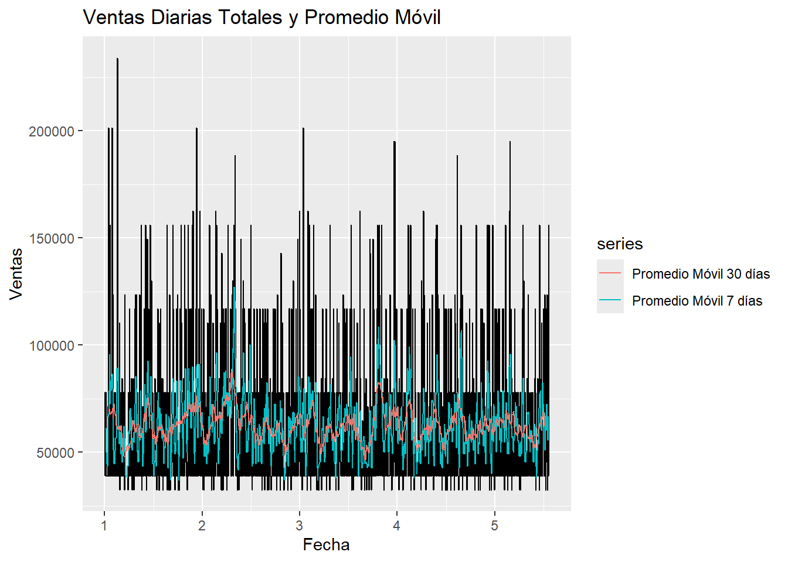
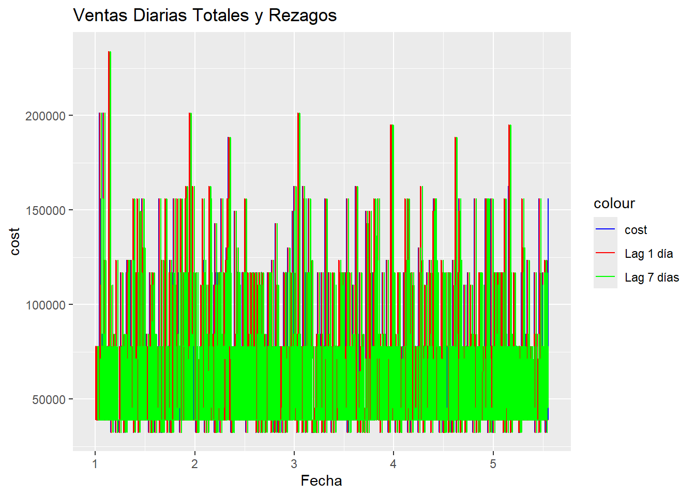
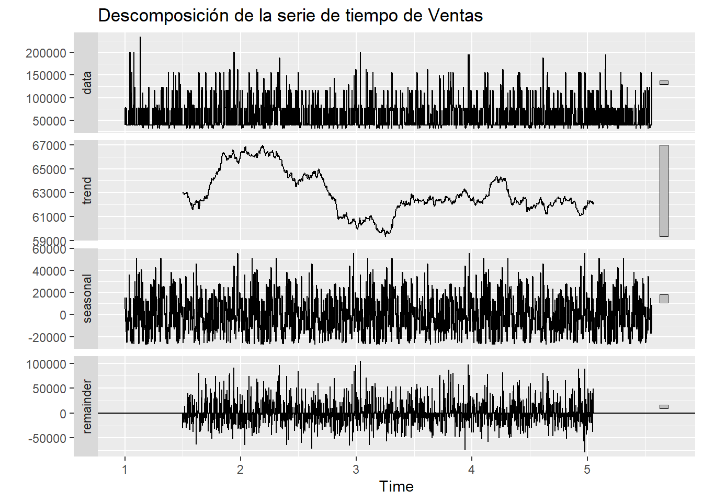
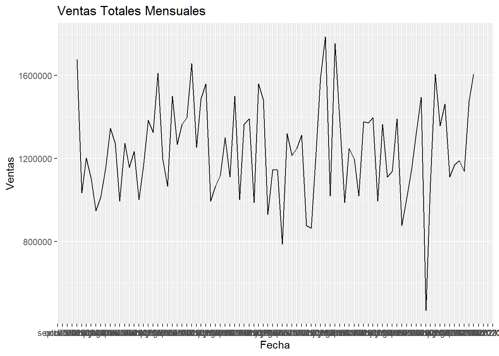

Chapter 3 Análisis de Series de Tiempo de Ventas
Este capítulo presenta un análisis de una serie de tiempo de ventas, utilizando R y diversas librerías como readxl para leer los datos desde un libro de excel, forecast, dplyr, lubridate y ggplot2. El objetivo es explorar los datos, identificar patrones y tendencias, y sentar las bases para futuros análisis.
#install.packages("readxl")
#install.packages("forecast")
knitr::opts_chunk$set(warning = FALSE, message = FALSE)3.1 Limpieza y procesamiento de los datos
El proceso comienza con la importación y preparación de los datos desde un archivo Excel. Se realizan tareas de limpieza, como la eliminación de caracteres especiales en la columna de costos y la conversión de la fecha de transacción al formato adecuado. Finalmente, se eliminan las filas con valores faltantes en la columna de costos.
Para facilitar el análisis de la estacionalidad, se crea una columna “Mes” a partir de las fechas de transacción.
datos <- read_excel("MUESTRA SERIE TIEMPO.xlsx", col_types = c('numeric','numeric','date','numeric','numeric','text','numeric','text','text','text','numeric','numeric','numeric','text','numeric','text','text','text'
))
# Agregar una columna de mes
datos <- datos %>% mutate(Mes = month(transaction_date, label = TRUE, abbr = TRUE))
# Limpiar y transformar los datos
datos <- datos %>%
mutate(cost = as.numeric(gsub("[\\$, ]", "", cost)), # Elimina $, espacios y comas de 'cost' y lo convierte a numérico
transaction_date = ymd(transaction_date)) %>%
filter(!is.na(cost)) # Elimina filas con costos NA (Producto 23)3.2 Análisis con Promedio Móvil:
Se crea una serie de tiempo (ventas_ts) a partir de las ventas diarias totales. Para suavizar la serie y visualizar tendencias, se calcula el promedio móvil con ventanas de 7 y 30 días. La gráfica resultante “Ventas Diarias Totales y Promedio Móvil” muestra la serie original junto con los promedios móviles. Se observa que el promedio móvil de 30 días suaviza aún más la serie, mostrando con mayor claridad las tendencias a largo plazo y minimizando las fluctuaciones diarias. El promedio móvil de 7 días, por otro lado, permite observar patrones semanales o de corto plazo.
# Promedio móvil
# Crear una serie de tiempo para las ventas diarias totales
ventas_ts <- ts(datos %>% group_by(transaction_date) %>% summarise(VentasTotales = sum(cost)) %>% pull(VentasTotales), frequency = 365)
# Calcular el promedio móvil (ejemplo con ventana de 7 días y 30 días)
ventas_ma7 <- ma(ventas_ts, order = 7)
ventas_ma30 <- ma(ventas_ts, order = 30)
# Graficar la serie de tiempo y el promedio móvil
autoplot(ventas_ts) +
autolayer(ventas_ma7, series="Promedio Móvil 7 días") +
autolayer(ventas_ma30, series = "Promedio Móvil 30 días")+
ggtitle("Ventas Diarias Totales y Promedio Móvil") +
xlab("Fecha") + ylab("Ventas")
3.3 Análisis de Rezagos:
Se calcula el rezago de las ventas con 1 y 7 días para explorar la autocorrelación en la serie. Estos rezagos se visualizan en la gráfica “Ventas Diarias Totales y Rezagos”, que permite observar la relación entre las ventas de un día y las ventas de uno o siete días anteriores. Esta información es relevante para entender la dependencia temporal de las ventas y puede ser útil en modelos predictivos.
# 2. Rezagos (lags)
# Calcular el rezago de las ventas (ejemplo con 1 y 7 días de rezago)
ventas_lag1 <- lag(as.numeric(ventas_ts), 1)
ventas_lag7 <- lag(as.numeric(ventas_ts), 7)
# Crear el data.frame con los vectores numéricos
df_lags <- data.frame(Fecha = time(ventas_ts),
cost = ventas_ts,
Lag1 = ventas_lag1,
Lag7 = ventas_lag7)
# Graficar la serie y los rezagos
ggplot(df_lags, aes(x = Fecha)) +
geom_line(aes(y = cost, color = "cost")) +
geom_line(aes(y = Lag1, color = "Lag 1 día")) +
geom_line(aes(y = Lag7, color = "Lag 7 días")) +
ggtitle("Ventas Diarias Totales y Rezagos") +
xlab("Fecha") + ylab("cost") +
scale_color_manual(values = c("cost" = "blue", "Lag 1 día" = "red", "Lag 7 días" = "green"))
3.4 Análisis de Estacionalidad (Descomposición):
Para analizar la estacionalidad, se utiliza la función decompose que descompone la serie de tiempo en sus componentes: tendencia, estacionalidad y residuos. La gráfica resultante “Descomposición de la serie de tiempo de Ventas” muestra cada componente por separado. Se observa la tendencia general de las ventas a lo largo del tiempo, así como un patrón estacional recurrente. El componente de residuos representa la variabilidad que no se explica por la tendencia ni la estacionalidad.
# 3. Estacionalidad (usando descomposición)
ventas_decomp <- decompose(ventas_ts)
autoplot(ventas_decomp) + ggtitle("Descomposición de la serie de tiempo de Ventas")
3.5 Análisis de Estacionalidad (Promedio Mensual):
Para una visión más clara de la estacionalidad, se agrega un análisis de las ventas totales mensuales. La gráfica “Ventas Totales Mensuales” muestra las ventas agregadas por mes. Esta visualización permite identificar patrones estacionales a lo largo del año, como picos o valles de ventas en determinados meses. La configuración del eje x con intervalos de un mes y etiquetas que indican el mes y el año facilita la interpretación de la estacionalidad en la serie.
# Análisis con promedio mensual para ver la estacionalidad
ventas_mensual <- datos %>%
group_by(Mes, transaction_date = floor_date(transaction_date, "month")) %>% # Agrupa por mes y primer día del mes.
summarise(VentasTotales = sum(cost))
ggplot(ventas_mensual, aes(x = transaction_date, y = VentasTotales)) +
geom_line() +
ggtitle("Ventas Totales Mensuales") +
xlab("Fecha") + ylab("Ventas")+
scale_x_date(date_breaks = "1 month", date_labels = "%b %Y") # Ajusta etiquetas del eje x
3.6 Conclusión
En resumen, este capítulo realiza un análisis exploratorio de las ventas utilizando diferentes técnicas de series de tiempo. El uso de promedios móviles, rezagos y descomposición permite identificar tendencias, patrones estacionales y autocorrelación en los datos, sentando las bases para un análisis más profundo y la construcción de modelos predictivos en capítulos posteriores.